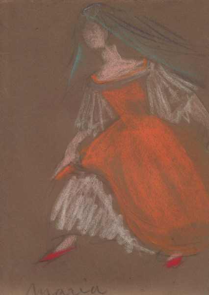

|
Working with Chekhov
 Michael Chekhov in
Ivan the Terrible
Early Days - Kester Baruch writes from England,
November 21, 1936
![Dartington Hall, Text:
Adelaide
Amateurs
вариті і дальтв
Up hoo-2/1936
At Chekhov's Studio Writing from the Chek- hov Theatre Studio, Ren-
worth House, Totness,
Devon,
England, Kester Baruch sends news that one feels sure will be much en- joyed by all members of the Ab-Intra studio which he
and Alan Harkness created. The letter begins with a trip to Vienna because, as he explains: "I have just returned
while writing this from there
am going back in my mind to the glorious sunny days
I had in that charming city.
I knew that on October 2 I was to come down. here to work with Chekhov. and so de- cided to leave "Lady Precious Stream"
a little earlier than was actually neces- salvandenave an interlude of
needed holiday
much
city.
in Austria's famous The feeling the train hurrled across Germany was one of tension. at
least so it seemed to most British folk. However. this changed suddenly as the train crossed the border. The Austrian countryside was smiling and lovous. In the fields men, stripped to the waist
and golden brown with the sun.
were bending over their work, and with them were women and girls in gay beasant
clothes similarly engaged.
Danube Not Blue
The Danube, a narrow.
winding
stream at this point. scurried
gong between cliffs and boulders, and as we drew nearer we sighted it several times again, and I remarked that. though it
was now wider, it was still not blue!
Despite the bad 1 times that
Vienna has gone through. and despite the pre_ sent uncertainty in regard to trade and commerce. Vienna strikes ones as still
being a happy, smiling city.
There is much leisure for certan people, any- ways few beggars, tasteful dressing.
and little make-up.
From the cafes
filled with people sitting idly in
sun reading the newspapers. the
drift mixed odors of coffee. cigars. foods sea-
soned with garlic, and wonderful cakes. When I, too. had sat for hours in a cafe. or wandered the streets, or sat basking in the sun in one of the many beautifully kept gardens. I would return
quiet cream and white room in Neubaugasse. which somehow was
baked abways faintly fragrant with
apples.
could only surmise that the hausfrau had a penchant
baked apples.
for
Air Raid Practice Time went all too quickly, and the day of my departure was at hand. That
night, as
the train again hurried across Germany, we travelled in com-
plete darkness.
order had been
issued that all lights were to be
ex- tinguished, all the curtains to the win-
dows drawn.
who had not seen a novspaper for several days. was some. what perturbed and wondered what
could have happened.
the preparacions and excitement at last fructified?
someone? Was Germany at war with
But no, it was merely air raid practise and the evil day that
everybody dreaded had not arrived. Interesting, and most satisfactory to all those who so loyally supported Kester Baruch and Alan Harkness and their Ab Intra Studio will be the news that they have been selected out of many applicants to be two of a com- pany that Chekhov intends to train for three years and then bring them be- fore the public, backed by the seemingly
unlimited financlal resources.
of the marvellous Dartington Hall Estate in
Totness. Devon.
The Inner Attitude
Chekhov works in
that Kester Baruch and Alan Harkness felt was the only way when they named
their studio Ab-intra.
He works from the within and in his training makes
it clear that all the
an actor is called upon to do
son to a dong, that
in- separable from an inner attitude, that
is, if it is to be creative and convincing. The persons in the group have been drawn from all corners of the world- two Australlans (Kester and Alan), one New Zealander, one or two Canadians, one German, one Norwegian, several Americans, and among the men only
two Englishmen.
Surrounded By Beauty So there they are embarked on. a career that may make history in the
world of the theatre.
Kester writes: "We are surrounded by beauty, work- ing in beautiful studios, sleeping in beautiful rooms, opening on to beauti- ful gardens, fed with beautiful food
served in a beautiful manner. Chekhov says that while we are here we must not forget for one moment that we are artists, that we are young, strong, and
beautiful.
We may not be so outside, but that is not nearly so important as
being so
Inside, tor unal must be our attitude to all we do even the simplest thing. such as shifting a chair, draw-
ing the curtains, or even closing the
dOOr
"Needless to say." says Kester
"Alan and I feel uniquely honored to be the two Australians selected from the many
form the initial group, which will, if all goes well, make theatrical
tory.](image/1/1pF0PTclxkE-i3j8s1I8Rw506049/GW780H977.jpg "Dartington Hall")
Dartington Hall: training session, 1936

Alan Harkness (undated photograph)

Playbill for The Little Theatre production of
Twelfth Night, New York.
(Alan Harkness as Feste, far
right.)

.... inside front cover
![CTS Brochure, Text:
THE PLAYBILL
WHO'S WHO
It is the policy of the Chekhov Theatre Players not to star or feature any one performer because of their desire to have the company recognized and judged as an entity in itself. They believe that, important though the individual performance is, ensemble acting is the highest development of theatrical art.
MICHAEL CHEKHOV, the company's mentor and director, is a nephew of Anton Chek-hov, the playwright. He was a member of the acting company of the world-renowned Moscow Art Theatre, under the leadership of Stanislavsky and Nemirovitch-Dantchenko.
He was director of the Second Moscow Art Theatre, and has played and directed in many languages and as many countries. Although this is the first time he has directed
"Twelfth Night" in its original language, he is credited with four previous productions of the play in three different languages and in different stagings.
In 1936, under the pa-
tronage of Mr. and Mrs. Leonard K. Elmhirst, he founded the Chekhov Theatre Studio at Dartington Hall, Devonshire, England. World developments made it necessary to move the studio to Ridgefield, Conn., in 1939, where it now functions.
GEORGE
_SHDANOFF, co-director of
"Twelfth Night," received his early training as an actor in Russia. Subsequently he played in German in the leading theatres of Berlin. He also directed, acted and wrote for the stage and screen in Paris and London.
His original plays and adaptations enjoyed long runs in various European capitals. He was a member of Chekhov's staff at Dar-tington Hall and continues to work with his compatriot at the Studio in Ridgefield.
JOSEPH WOOD, who composed the music for "Twelfth Night," majored in music at Bucknell University.
He studied piano un-
der Carl Roeder at the Institute of Musical Art, and from 1936 to 1940 held a fellowship at the Juilliard Foundation in composition, studying with Bernard Wagenaar.
A sym-
phony written by Mr. Wood in 1939 has been performed both here and abroad.
BEATRICE STRAIGHT (Viola) was delegated Chekhov's authority and the responsibilities of director during the Players' recent road tours.
Daughter of Mrs.
Leonard
K. Elmhirst, Miss Straight studied for a year with Madame Ouspenskaya and Madame
Daykarhanova in New York and attended a summer term at the Cornish School in Se-attle.
Graduating from the Chekhov Theatre Studio in 1939, she founded the professional Chekhov Theatre Players.
FORD RAINEY (Sir Toby Belch) attended the Cornish School in Seattle. He was a member of the American Repertory Theatre in New York and on tour, worked as a marionette manipulator and actor with Sue Has-tings' Marionettes, and is fencing master at the Chekhov Studio.
RONALD BENNETT (Sebastian)
attended
Brown University, Providence, R. I., and has appeared professionally on Broadway in sev eral television broadcasts.
SAM SCHATZ (Malvolio) calls the University of California his Alma Mater. He appeared in several productions of the Little Theatre at Berkeley before joining the Chekhov Theatre Studio at Dartington Hall.
JOHN FLYNN (Orsino) became interested in the drama at the University of Virginia. He appeared with Ethel Barrymore in The Constant Wife," and has been seen in various plays on tour.
MARY HAYNSWORTH (Maria) was President of the Masquers Dramatic Club at Winthrop College. She earned a B.A, degree at the University of North Carolina, appeared in the Paul Green's play at the Texas Centennial and later acted in the same author's "The Lost Colony." Several other summer theatre engagements followed. She has studied dancing with the Jooss Ballet and the Martha Graham Group.
HURD HATFIELD (Sir Andrew Aguecheek) majored in dramatics at Bard College, New York. He won a scholarship to the Chekhov Theatre Studio at Dartington Hall, England, and has been identified with the Chekhov Theatre Players since.
(Continued on page 12)](image/1/Ht5IgKrhYpdzGaa7zZnfyQ475565/GW748H1010.jpg "CTS Brochure")
![Who's who cont. Text:
12
WHO'S WHO IN THE CAST
(Continued)
ALAN HARKNESS (Feste), a native of Aus-tralia, won a scholarship for painting at the age of sixteen at the National Gallery, Mel-bourne, Australia. He toured Australia for two years in repertory and later formed the
"Abintra Theatre Studio" for experimental productions in Adelaide, Australia. He acted in the London production of "Lady Precious Stream" and left to join the Chekhov Theatre Studio at Dartington Hall. Now a member of the Studio's teaching staff, he recently assisted Mr. Chekhov in directing "King Lear."
MARY LOU TAYLOR (Olivia) was active in dramaties at Bennington College, and worked with producing groups at the Playhouse in Cleveland, the University of North Carolina, the King-Smith Studio in Washington, D. C., and for two seasons with the summer theatre at Williamstown, Mass.
YOUL BRYNER (Fabian) was born in the Far East. At the age of twelve he was sent to school in France. He studied singing in Paris and joined one of the leading theatres there. He left France when the war started and came to the United States.
NELSON HARRELL (Curio) received his B.A. degree from Baylor University in drama-English. Performed at Baylor University Theatre and the Civic Theatre. He has worked on radio, sung with leading dance bands, and did a stint as reporter on the New Orleans "Times Picayune."
LESTER BACHARACH (Valentine) graduated from Brown University. Was a member of the Woodstock Playhouse, Woodstock, N. Y., where he played with Elissa Land in one of the productions. He has been heard often on the radio in a variety of programs.
SAVE YOUR PLAYBILLS: Whether you collect them as a hobby, or for the settlement of future arguments about who played what, and when, or merely because you're incurably sentimental about the theatre, you'll find they will assume a more and more important place in your library and your private life -particularly if bound in our capacious Playbill binder, sent to you postpaid for $2 (check or money order). The Playbill,
108-114 Wooster Street, New York, N. Y.
THE PLAY BILL
THE CHEKHOV THEATRE
PLAYERS
THE Chekhov Theatre Players were her
ganized in the summer of 1940. They are young actors from all parts of the United States, with a member from Australia, England and the Far East.
In banding together under the name and guidance of Michael Chekhov of Moscow Art fame, their belief was that a group, or ensemble theatre, offered the greatest opportunity for developing their craft.
For many months they studied and rehearsed together at the Chekhov Theatre Studio in Ridgefield, Conn., becoming a company in spirit as well as in name. In the Fall of 1940 a series of road bookings was arranged and the young actors were sent out to prove their mettle.
This tour of "Twelfth Night" and "The Cricket on the Hearth," which covered 15 states, from Massachusetts and New Hamp-shire in the North to Texas and Oklahoma in the South, proved successful in every way.
They went into territory seldom, and in some cases never before, traversed by professional players. The close bookings in divers and remote parts of the various states made travel by railroad impractical. Instead, three station wagons, driven by members of the troupe, were used and a truck for lights, props, costumes and scenery.
It was an exciting life, with many adven-tures, to say nothing of the handicaps in assembling the shows in auditoriums and buildings ill-equipped for professional stage productions. But the enthusiasm of their audiences and the realization that they were bringing theatre to thousands of Americans, some of whom had never seen a stage production before, prompted them to tour again this autumn, adding another play, "King Lear," to their repertoire.
Needless to say, Michael Chekhov was gratified by the achievements of his com-pany. And the Chekhov Theatre Players themselves, through their success on tour, found the necessary courage to brash it out in sock and buskin for the honors of the Broadway field.
The tenure of the company on Broadway, however, will be limited because of bookings which start in the middle of January in Florida and continue through until April, taking in new territory in Texas, Oklahoma and up through the Middle Western States.](image/1/rmJM1UvfU32tXSZPmSiIfg507285/GW820H1110.jpg "Who's who cont.")
Cast list
![Playbill, Text:
LITTLE THEATRE FIRE NOTICE: The exit, indicated by a red light and sign, nearest to the seat
you occupy is the shortest route to the street.
In the event of fire or other emergency please do not run WALK TO THAT EXIT.
PATRICK WALSH (No. I), Fire Commissioner and Chief of Department
THE • PLAYBILL • PUBLISHED • BY • THE • NEW • YORK • THEATRE • PROGRAM • CORPORATION
Beginning Monday, December 8, 1941
Matinees Wednesday and Saturday
THE CHEKHOV THEATRE PLAYERS
Present
TWELFTH NIGHT
OR, WHAT YOU WILL
by
WILLIAM SHAKESPEARE
Production Devised by MICHAEL CHEKHOV
Directed by MICHAEL CHEKHOV and GEORGE SHDANOFF
Music Composed by JOSEPH R. WOOD, Jr.
Technical Advisor, JOHANNES LARSEN
VIOLA.
SEA CAPTAIN
SEBASTIAN
"IF YOU KNOWS OF A BETTER
'OLE, GO TO IT!"
NATIONAL DISTI
CAST
(In order of appearance)
BEATRICE STRAIGHT
. FRANK RADER
RONALD BENNETT
Lives that have lived
"MAKE MINE MOUNT VERNON" The cue to rare whiskey enjoyment - an intro- duction to the delicate flavor of this patrician of
American ryes.
THE BOND* OF FRIENDSHIP Straight Rye
whiskeg
Mount Vernon
BOTTLED IN *BOND STRAIGHT RYE WHISKEY - 100 PROOF](image/1/l2zQQmOlEDIgJrrw_J5s7Q354362/GW817H1111.jpg "Playbill")
Cast List cont.
![Playbill cast list, Text:
THE PLAYBILL
2nd SEA CAPTAIN
... CHARLES BARNETT
ORSINO
.. JOHN FLYNN
CURIO
NELSON HARRELL
VALENTINE
LESTER BACHARACH
SIR TOBY BELCH
. FORD RAINEY
MARIA.
.. MARY HAYNSWORTH
SIR ANDREW AGUECHEEK
.. HURD HATFIELD
FESTE
• ALAN HARKNESS
MALVOLIO
..SAM SCHATZ
OLIVIA
•MARY LOU TAYLOR
FABIAN
. YOUL BRYNER SERVANTS. DAPHNE MOORE, ELEANORA BARRIE, ALFRED
BOYLEN, MARGARET BOYLEN, and PENELOPE MARSHALL
SEQUENCE OF SCENES
Prologue: Seacoast of Ilyria.
ACT I.
Scene 1-Apartment in Duke's Palace.
Scene 2-Street Before Olivia's House.
Scene 3_A Room in Duke's Palace.
Scene 4- A Room in Olivia's House.
Scene 5-A Cellar in Olivia's House.
Scene 6-A Room in Duke's Palace.
Scene 7-Olivia's Garden.
INTERMISSION - 15 MINUTES
• THE MANAGEMENT IS NOT RESPONSIBLE FOR PERSONAL
APPAREL OR PROP-
ERTY OF PATRONS UNLESS PROPERLY CHECKED WITH THE THEATRE ATTENDANT
1333
WILTON LACKAYE
IN TRILBY
The
Toast of New York.
TODAY
... and for 131 YEARS
OLD OVERHOLT
AMERICA'S MOST POPULAR BOTTLED IN BOND
1810 -TASTE TELLS-1941
STRAIGHT RYE WHISKEY
A. OVERHOLT & CO., INC., NATIONAL DISTILLERS PRODUCTS CORP., NEW YORK
100
PROOF
Зорино IN 4059
SHOL](image/1/K_1qe5XMhe_6azrrT_SF-Q369189/GW820H1111.jpg "Playbill cast list")
Back page
![Playbill for Little Theatre, Text:
THE PLAYBILL
THE CHEKHOV THEATRE NEW YORK STUDIO
29 West 56th Street, New York, N. Y.
Michael Chekhov, Director
George Shdanoff, Co-Director
announces A NEW CLASS FOR PROFESSIONAL ACTORS
with Michael Chekhov In this course for professional members of the theatre, Michael Chekhov will
sharo the results of his many years of experience as actor, dirctor and teacher.
CURRICULUM OF REGULAR STUDENT COURSE Complete training in technique of acting, speech, eurythmy, music
appreciation, choral singing, fencing, gymnastics, and make-up.
For further information, apply to
Deirdre Hurst, Registrar
29 West 56th St.
New York, N. Y.
Co. 5-2331
HOTEL CHELSEA DIRECTLY ON THE BOARDWALK
at Morris Avenue Delightful in any season Atlantic City is never lovelier than now. And whether you seek recreation or relaxation, the matchless facilities of the Hotel Chelsea wili make it a memorable visit. Join us for a week. or two Laze on the sundeck: Dine royally in our beautiful dining-room overlook ing the ocean: Ride, golf bicycle: Relax to superb concert music: Or visit
our magnificent new bar where the choicest tempters from a well-stocked
cellar are available
Billy Van's Strolling Trio in Bar and Terrace every wight.
Johnny
tamoin the ri ever Saturday
ATLANTIC CITY, NEW JERSEY
JOEL HILLMAN
J. CHRISTIAN MYERS • JULIAN A. HILLMAN
FROM
$700 WITH MEALS
AND BATH
$400 ROOM ONLY
WITH BATH
PER PERSON
WONTS A ROOM
SPECIAL
WEEKLY RATES](image/1/0ihxZqeGK1pIWyuD2ZDb0Q340503/GW827H1108.jpg "Playbill for Little Theatre")
Twelfth Night
Costume Design
(Alan Harkness)
Design for Feste
Design for Orsino

Design for Maria
Design for Malvoleo
Photographs from the production

(Alan Harkness as Feste)

Chekhov Theatre Players - Brochure cover
Centre page![CtS Brochure 2, Text:
MICHAEL
CHEKHOV
Directo
CHEKHOV TH Four years ago the Chekhov Theatre Studio was founded train young people in the art of the theatre; to develop their ind
repertory of plays of high standard with which to tour the count
A PROMISE FULFILLED This promise, made in 1936, was first fulfilled by the Chekhov Theatre Players' appearance on Broadway in 1939,
and then by their extensive tour of the country in 1940.
CHEKHOV THEATRE PLAYERS By the unprecedented success of their 1940 tour the Chekhov Theatre Players have proved that "the road" is eager to see good theatre and that a group of enthusiastic young American actors, designers, musicians and technicians- the outgrowth of intensive training in the Chekhov Theatre Studio
can meet that need with thorough professional mastery.
UNDER MASTERLY DIRECTION The directing genius of this young American acting com pany is Michael Chekhov, nephew of the great playwright, Anton Chekhov: actor member of the world's foremost stage, the Moscow Art Theatre; one of the director founders of its celebrated First Studio; and sole director of the Second Moscow Art Theatre for five years. Leaving Moscow in 1928, he worked in Riga, Paris, Vienna and Prague and brought his own company to New York in 1935. As a result of that
fortunate visit the Chekhov. Theatre Studio was founded.
BRING A REPERTORY OF GREAT PLAYS For their 1941 tour the Chekhov Theatre Players have selected a brilliant and varied repertory. Because of the tre
mendous success of Shakespeare's "Twelfth Night" and Dickens "The Cricket on the Hearth" throughout the 1940 tour, these will be shown again. Another great Shakespearean play will
be added, and a fantasy for children. Of Shakespeare's gayest and most heart warming comedy, Walter Hampden, the eminent American actor says: "I never enjoyed Twelfth Night' as much as I did the other night at
the Chekhov Theatre Studio. It was original and delightful."*](image/1/Gp09TwXxnE79ALsFKs4nAw650548/GW792H1044.jpg "CtS Brochure 2")
cont..![CtS Brochure p.3, Text:
THEATRE PLAYERS a school for the theatre and a theatre itself. Its aims were to
lual gifts; to form a group and to provide such a group with a While of an earlier production by Michael Chekhov of the same play. Sean O'Casey, the great Irish playwright said: "It bewildered me with its joy, rhythm, color and loveliness. This is Shakespearean Comedy at last! This is the big heart of the poet. Here is the production in which the audience can laugh with Shakespeare, dance with Shakespeare, and sigh with
Shakespeare. The Cricket on the Hearth" by Charles Dickens was dramatized almost as soon as the novel was published in 1845, and has ever since proved a great favorite with American au diences and leading actors of the stage -Joseph Jefferson having
created one of his most celebrated roles as Caleb Plummer. The adaptation used by the Chekhov Theatre Players has been made by Michael Chekhov, and to the present production of the charming tale he has brought a wealth of insight, creating
a performance which touches the hearts of both young and old. A desire to give pleasure to children and to encourage the theatre audience of the future has actuated the Chekhov The atre Players in their choice of "Troublemaker Doublemaker." This fantasy, which will delight children of all ages, is based on fairy tale themes of the great Austrian writer, Ferdinand Reimund, and has been adapted and given a setting in the south western part of the United States. The play has been written by Michael Chekhov and Iris Tree, daughter of Sir Beerbohm Tree, the celebrated English actor. Humorous and yet profound, it deals with the adventures that befall a man
who is a tyrant to his family and servants. How he is, made to "see himself as others see him," and how his heart is changed,
is depicted in a series of amusing and fanciful scenes. Because of the great demand for Shakespeare's plays, it has been decided to draw once more on that inexhaustible source and produce one of his dramas. The timeless quality and universal appeal of the greatest of all dramatic writers
makes this choice a fortunate one for the present time.](image/1/-mxW5ErteB3yUFlJCGE_4g664024/GW809H1069.jpg "CtS Brochure p.3")
Back page![CTS Brochure - back cover, Text:
Excorpts from Newshokers and Letters "Chekhov and his associate, George Shdanoff, have school- ed their youthful players to capture the ribaldry, the
buoyant buffoonery, the racy fun that
Shakespeare
visioned
..Twelfth Night*
'is à masterpiece of slapstick."*
Robert Coleman in the New York Mierer "It was interesting to watch them thrown back to such an extent on make-up, technical pains and high spirits, never minding the logic of any prose in life. This conception of the play is the only conception and approach that can set
free such a piece of art as 'Twelfth Night."
-stark Young in the New Reouble Albany has been host to most of the great names in the legitimate theatre, but we can say without equivocation that the performance last night, for sheer artistry and
finished work has never been surpassed.
Edgar S. Yan Olindo In the Albony Times Union the magic never weakened and the audience's en thusiasm never waned. The Chekhov Players presented Twelfth Night with a joyous and vibrant theatricality that reminds a twentieth century audience at the same time of the Ballet Russe and Walt Disney's cartoons Twelfth Night' is not life, makes no pretense of being life. Nor was the production in any sense ARTY; it
was ART. If this be theatre, then give me more of it . .. Shakespeare, we know by seeing, is master of revels to mankind; and the Chekhov Players are his consanguine
revellers.'
-Luther S. Mansfield, Ph.D., la the Willioms Record "I never enjoyed "Twelfth Night as much as I did the other night at the Chekhov Theatre Studio. It was
original and delightful."-Walter Hampden in the Ridgefield Press "We find the young actors to be one of the best troupes now working. It goes to show what expert training and
direction can do."
Melvin spiegel in the Chicago Seatine! "Under Mr. Chekhov's direction a production of Twelfth Night has been devised which does the neat trick of
making one of Shakespeare's comedies funny."
-Robert Rice In "P.M."', New York "The Chekhoy Players in 'Twelfth Night are both an
education and an entertainment.
-John Rosenfield in the Dollos Morning News "Twelfth Night' as presented by a brilliant cast of Chekhov Theatre Players was excellent and even enjoy
able Shakespeare."
ed Rogers in the Aticato constitution * 'Twelfth Night as presented by the Chekhoy Players.
was a theatrical gem.
Ediforial in the Augusta Chronicle "It was a remarkable production, filled with innovations
in technique, and admirable voice projection."
-James Y. Lovell in Dallas Times Herald "Shakespeare meant 'Twelfth Night' to be funny, not dignified, and the Chekhov Players put enough vim and
vigor into their performance to make a roaring evening."
Hays Cross in the Stillwater Dolly Press, Okle. The most rapturously gay and colorful Shakespearean
musical comedy imaginable bedecked the boards.
-Ellobeth Copelaed in the Richmond News Leader The performance of 'Twelfth Night' was brilliant both
in staging and in actual interpretation of lines."
-The Lynchourg News The spirit of the production seemed to be that intended
by the poet ..
All in all, the play seemed to reflect a
remarkably guiding spirit, and splendid execution.
-G.
V. Kidder, Director
University
Vermont
Recreation in the Summer Section "Under the skilled direction of Michael Chekhov, in collaboration with George Shdanoff, the beloved story, (Cricket on the Hearth,) lost none of its pathos or beauty in its conversion from book to play. The actors, without exception, moved smoothly and with confidence,
displaying the artistry which has made them at sensation.
-The Manchester Union, N. H. With the superb make-up and settings which are funda- mental to Mr. Chekhov's system, 'The Cricket' was visual ly realistic as a succession of old English prints. An amazing aspect of this new acting troupe on the American scene is the maturity they have achieved in spite of their
youth. There is real conviction in their work.'
-C. R. Roseberry in the Albany Knickerbocker News The work of the classic illustrator of Dickens' stories
came alive with the artistry of these unusual people."
Frobet copeland a the Richmond News Leader "For sheer ease and precision of movement and pantomime
I believe the Chekhov actors are unexcelled in this country.. Over the whole performance there was clearly evident, the hand of a brilliantly theatrical and imaginative
regisseur."
Frank McMullen, Asst. Professor, Play Production
Dept. of
Tale University *Seldom do theatre-goers have an opportunity to see theatre the play, the staging, the scenery, the lighting. and the costuming, so harmoniously blended into a single
artistic unit."
Director,
The
orne "I was astonished when I saw how completely an audi- ence of one thousand children was absorbed in the plot of the Cricket on the Hearth': it was a tribute to the
reality of the performance." Herbert C. Lipscomb, Chairmon. Fine Arts Committee
Randolph Macon
Woman college
"The joy we all received from seeing Twelfth Night and
'Cricket' is still with us."
J.D. Hatch, Jr.. Director, Albany Institute of History and Art "May I tell you again how delighted we all, and I par ticularly, were with your performance of "Twelfth Night* last evening? The color, the gaiety, the movement and the spirit of the whole play were a joy to all of us who
care about dramatic poetry and the theatre.
-Wielfred Smith, Vassar Experimental Theatre "The Chekhov Studio Players brought us real theatre, and I am happy that our people could have the opportuni
ty of seeing and enjoying such fine productions.
-Terry Martin, Chairman, Allled Arts Committee
College
Refertory for Season 1941-42
TWELFTH NIGHT by William Shakespeare
THE CRICKET ON THE HEARTH
by Charles Dickens
"TROUBLEMAKER-DOUBLEMAKER"
by Michael Chekhov and Iris Tree
A SHAKESPEAREAN DRAMA The Chekhov Players showed themselves to be masters
of their art...We think Shakespeare would have liked it."
J. O. in the Ithaca Journal
for Booking Particulars Apply To: THE CHEKHOV THEATRE STUDIO, INCORPORATED
RIDGEFIELD, CONNECTICUT](image/1/0Y7DdWLc7UkCE09-eITP0Q727473/GW809H1069.jpg "CTS Brochure - back cover")
The Cricket on the Hearth
Ridgefield, Connecticut, 1940![Ridgefield Connecticut, Text:
NEWS •f CHEKHOV THEATRE STUDIO
Ridgefield, Conn.
CRITICS SAY:
DAILY MIRROR WEDNESDAY, JULY 24, 1940
New York
- Mr. Coleman Says:
Chekhov Troupe Has Clever, Amusing
'Twelfth Night'
By Robest Coleman
The Chekhov Theatre Studio is unveiling its new production of Shakespeare's "Twelfth Night" this week at the Elmhirst Theatre, situated on the grounds of the studio's spacious headquarters at Ridgefield, Conn.
The Chekhov Thentre Studio is non-profit producing organization directed by Michael Chekhov, nephew of Anton Chekhov, and sponsored by Beatrice Straight of the very social Whitney clan.
The
Studio sLOUD invaded
Broadway last season with "The Possessed" tor a two weeks' run.
Chekhov them decided that his players needed another season or of preparation before they
were ready for Broadway.
College Tour
He has booked a nation wide tour of colleges for the group.
"Twelfth Night" will be given at the University of Vermont, Bur lington, next Monday and at the University of Maine, Orono, on
Wednesday.
The company then will enjoy vacation, returning to Ridge. field late in August to resume re hearsals of the repertory it is to offer
tour.
This includes
"Twelfth Night, Hearth"
" "Cricket on the dramatizations of
two fairy tales, one of them based on
Hans Christian Anderson's
"The Mother."
The company and its produc tions will travel by motor van, starting in New England about the middle of October.
Southern, mid-Western and far.
Western dates will follow. It promises to be one of the most ambitious treks of recent years.
Chekhov has devised a clever.
dousias
"Twelfth Night.
production
?? He uses drapes,
interchangable screens, set pieces and original props to effect rapid scene changes without lowering
lot the curtain and Interruption of the comedy's action.
He uses "grips and prop men" (some are girls and pretty, too)
period costumes as integral parts of the production.
They
[whirl the scenery into new rangements before the audience's eyes in synchronization with the movement of the play, thus gain. ing pace and providing novelty.
Twelfth Niche Is a master niece of slapstick. In the same high-spirited key as The Merry
Wives ( of Windsor."
Its Sir Toby
Belch, Sir Andrew Aguecheek, Malvolio and Maria are cut from
tho same cloth as Master Will's Falstaff and his roguish pals.
Chekhov and his associate, George Shdanoil, have schooled their youth a players to capture the ribaldry, fooners
noyant bud
таСУ
Shakespeare vistoned.
Miss Straight, a beauty as well as a patron of the arts,,is a charming Viola (a role not unlike Rosalind). John Flynn is a hand: some Orsino, Katherine Faulder a delightful Olivia and Ronald Bennett a Hiery Sebastian.
Also meriting salutes
Woodrow Chambliss, as Sir Toby Belch; Hurd Hatfield, as Sir An drew Aguecheek, Blair Cutting, Malvollo; Sam Schatz,
Fabian;
Maria;
Margaret Draper,
Feste.
and Alan Harkness,
aS
The Incidental music by Joseph
Wood, the costumes by by. Lud mila Chirikova and the settings by
Robert Woods and Herbert
Lutz are admirable.
O THEATRE STUDIO
Ridgefield, Conn.
BURLINGTON FREE PRESS AND TIMES
TUESDAY, JULY 30, 1940
Chekhov Studio's 'Twelfth Nicht At UVM A Triumph Of Dramatic Art
Large Audience At Southwick Convulsed
By Highly Skilled Performers, Perfectly Fitted Into A Balanced Presentation
The Chekiny Thenter Suit!o presented Shakespeare's Twelfth
Night' under the auspices of the University of Vermont summer session at Southwick last eve-Ming to a very large audience.
safe.
predict that
at a pre-
enures periormance
_triumna_.of dramatic art
LaTest arMis have made shake-
spearian heroes and hcroines live the stage. have given inspired
intorpretations of leading
Chara
actor.
But rarely indeed does
one see a company. o artists, eaca who li succosstil in his. part. out essentiaily devoted to a balanced
That was the of last evening's performance.
Every actor, whether his part was a bit
characies.
was fully cognizant of the theme and trend of the comedy and fitted his contribution into the successful portrayal
of sie whole.
Enunciation Perfect
This rollicking comedy with its tender love themes, its roystering madcap rogues, its hilarious fun was unrolled for ap_evening.of full enjoymenta
well were
played that even Enlanethan his:
guage hifered no bar to a complete comprehension and enjoy-ment.
Excellence of enunciation and intelligence of phrasing contributed much to ease of appre-ciation.
The many songs which grace a, hakespearian play were made an ntegral part of the performance. ometimes solo. sometimes small isembles, always keeping and
Potiontm
The unique method of chang
Ing stage sets was highly interest-ins.
period"
removed or added pieces of furniture and various colored satin-
covered wings.Sach…scemen
acter o the comedusthnt the change of set offered no inter. ruption to the illusion.
Triumph of Composite Skill
One could honestly praise with
**Fexcellent,
However,
aboundea.
the composite offort.of.
cach member o the casu result: ins in an extraordinary povorme ance is the cuing or aleavestme portance.
The studio has its
staff
of technicians, musicians, choreographers and costume and scen-
which promoted
such a brilliant Derformance.
The cast was as follows: Viola.
Beatrice
Straight: Sea Captain,
Ford Rainey;
Sebs
Ronald
sennet, second sen
Captain,
Sum Schatz; Orsino, John Flynnk Curio,
Stord
Rainey
Valentine,
Sam Schatz:
Sir
Toby Belch,
Woodrow Chambliss: Marla, Margaret Draper;
Sir Andrew vAgue»
cheek, Hurd Hatfleld; Feste, Alan Harkness: Maivollo, Blair Cut-ting: Olivia. Katherine Faulder:
Fablan.
Sam Schatz; Servants,
Mary Haynsworth. Mary Lou Tay-Tor. Erika Chambilss and Alfred Boylen.
colonged and persistent sp plause expressed the audience appreciation of this excellent por-trayal, and
ШапУ
essrrein calls
thanks.
L. M. J.](image/1/LMjEMSYb7ACDynHl7oTXSQ767904/GW801H961.jpg "Ridgefield Connecticut")
![CTP - Connecticut, Text:
RIDGEFIELD (CONN.) PRESS
BURLINGTON. VT.. NEWS
CLIPPINg FROM
JULY 25, 1910
BANGOR. ME.. COMMERCIAL
JULY 30.
1940.
Twelfth Night
Amuses Large
UVM Audience
Chekhov Group
Triumphs in Play
1* Southwick
audier.co
ch krace
rian masterpiace
tenant
olena tan
Each was
Chekhov Studio Delights Audience
With Production of 'Twelfth Night'
waireordaronara
ohakeapeares comedy"Twellch
Niche" by Chekos hentre Stie
near-capacity.
audiences
hirst"Theatre
totors changing scents before the
coes or me sudience ando maina
Viola, one of the leading charso-
ASCOnTORE
ho was Sebastian:
John rivan
wis Orsino and Biatr culting wan
Ma volo. Woodrow Chambite and
Ford Rainey alternatod
Hurd Hatskd pinyed
Sir Andrew to perfection. Kather-
MICHAEL CHEKKOV
wan Fablan and
Valentine
MarKare DrOper was Marza. ford
Rainey and Woodrow
Alternale As GUriO AIAn HArk.
Incidental muse was composed
by Joseph Wo
Robert Woods was responsibie fo
perform-
ance was fog the benefit
AUGUST
1.
Chekhov Theatre
Studio Appears At University
NEW YORK
HERALD
TRIBUNE
AUGUST
1940
He Ridce
neehh Niches on Broodeas this](image/1/RvIo0NywpzpAFOFu8n2w4g588016/GW833H750.jpg "CTP - Connecticut")
|
|
mechthildharkness.net 2005-2023 by various authors (of mechthildharkness.net) is licensed
under Attribution-NonCommercial-ShareAlike 4.0 International